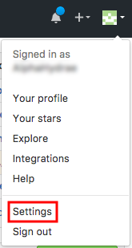
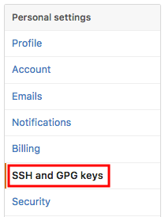
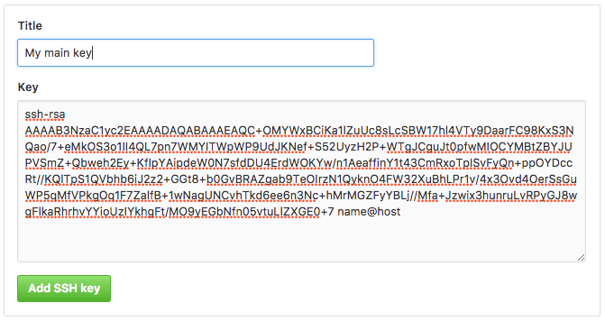
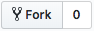
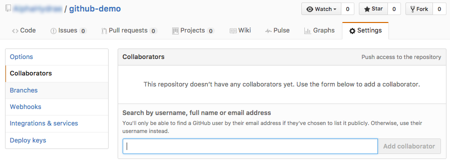
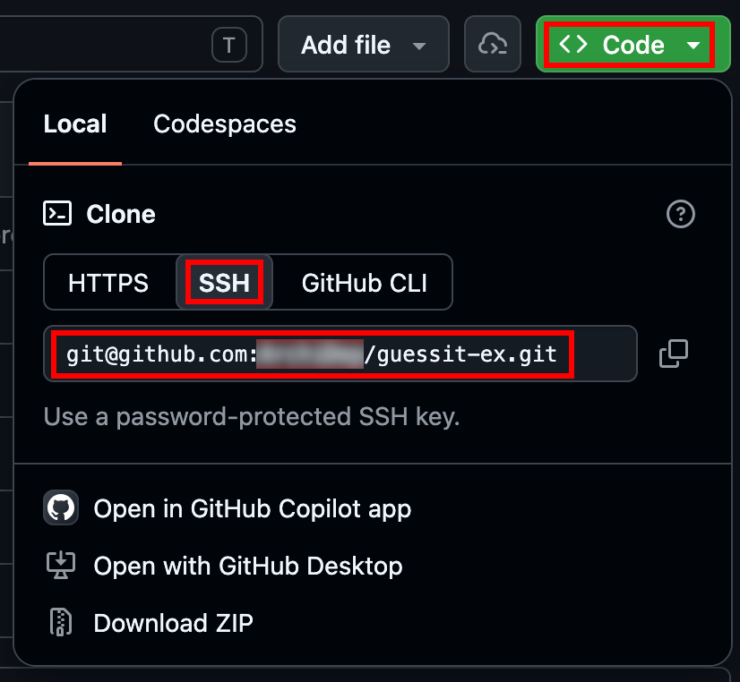

If one of your keys on GitHub has the same fingerprint as your local public key, your key is already there: skip to the next step.
Hello GitHub
Collaborate on GitHub as a team of two or three: fork an application, push and pull each other’s changes, and resolve a conflict.
On this page
Table of contents
 Legend
Legend
Parts of this exercise are annotated with the following icons:
-
 A task you MUST perform to complete the exercise
A task you MUST perform to complete the exercise
-
 Optional step that you may perform to make sure that
everything is working correctly, or to set up additional tools that are not required but can
help you
Optional step that you may perform to make sure that
everything is working correctly, or to set up additional tools that are not required but can
help you
-
 Advanced tips on how to go further (or
challenges!)
Advanced tips on how to go further (or
challenges!)
 The end of the exercise
The end of the exercise-
 The architecture of the software you ran or
deployed during this exercise
The architecture of the software you ran or
deployed during this exercise
-
 Troubleshooting tips: how to fix common problems you might
encounter
Troubleshooting tips: how to fix common problems you might
encounter
You will need
Recommended reading
You will work on Guess It, a guess-the-number game with a leaderboard, written in JavaScript for Node.js. You fork it, clone it, and share changes through GitHub. Your pushes will be refused, and you will resolve a conflict. Nothing in this exercise needs the application to run: you will make it work in the Guess It exercise.
Form your group
Form a group of two or three. Throughout this exercise, the members of the group are referred to as Alice, Bob and, in a group of three, Chuck. Decide who is who.
Each step is for the member named in its title. A step for Chuck is only for groups of three: a group of two skips it.
This exercise is a script. Do the steps in order, and wait for each other: some steps only work once another member has finished the one before. If your group gets lost, delete the clones and the fork, and start over.
Along the way, you are asked to predict what Git will do, one question at a time. Write your prediction down before you check it:
- Some questions have an answer you can reveal right below them. Reveal it before you run the command the question is about.
- Others ask you to predict what a command changes in the repositories. They come with a diagram that does not play by itself: it shows the repositories before the command. Make your prediction (in your mind or on paper), then play the diagram with its controls to check it.
Each diagram shows GitHub and one or two members of the group, whoever the step is about.
Everyone: check your SSH key on GitHub
Everyone does this step. You will talk to GitHub over SSH, with a key pair of your own. You may or may not have already added your public key to GitHub already. Let’s check.
Display the fingerprint of your public key:
$> ssh-keygen -lf ~/.ssh/id_ed25519.pub
256 SHA256:+9n19lW3aaw4kfotwaDm7Gt3FO1x1EAwJi8CcUyY6oE name@host (ED25519)
Then, on GitHub, open the SSH and GPG keys section of your account settings:


Each key listed there is shown with its fingerprint.
If the list is empty, or no fingerprint matches, perform the next two optional steps.
Note
If ssh-keygen fails with “No such file or directory”, you may have an older
key: try ssh-keygen -lf ~/.ssh/id_rsa.pub. If that fails too, you have no key
yet.
Create an SSH key
If you do not already have a key, create one with ssh-keygen, and press Enter
at every prompt to keep the defaults:
$> ssh-keygen
Generating public/private ed25519 key pair.
Enter file in which to save the key (/home/jdoe/.ssh/id_ed25519):
Enter passphrase (empty for no passphrase):
Enter same passphrase again:
Your identification has been saved in /home/jdoe/.ssh/id_ed25519
Your public key has been saved in /home/jdoe/.ssh/id_ed25519.pub
The key fingerprint is:
SHA256:+9n19lW3aaw4kfotwaDm7Gt3FO1x1EAwJi8CcUyY6oE name@host
Read SSH Key Protection again as a reminder on whether or not to set a passphrase.
Add your key to GitHub
If your public key is not already on GitHub, display and copy it:
$> cat ~/.ssh/id_ed25519.pub
ssh-ed25519 AAAAC3NzaC1... jde@example
Never copy or share your private key, the ~/.ssh/id_ed25519 file without
.pub.
In the SSH and GPG keys section of your GitHub settings, add a new SSH key, and paste your public key there:

The title of the key is up to you. It is useful when you have several keys, to remember which is which.
Check the fingerprints again: the key GitHub now lists must have the fingerprint
ssh-keygen -lf prints.
Alice: fork the repository
Alice opens the ArchiDep/guessit-ex repository in her browser,
and clicks the Fork button in the top-right corner of the page:

This creates a copy of the repository on GitHub that belongs to Alice, under her
GitHub username instead of ArchiDep. It is the group’s repository from now on.
Alice: invite Bob (and Chuck)
Only the owner of a repository can push to it. For the others to push, the owner must add them as collaborators.
Alice opens the settings of her fork, and adds the GitHub usernames of Bob (and Chuck for groups of three) as collaborators:

Bob (and Chuck): accept the invitation
Bob and Chuck must then accept the invitation, sent to them by email, before they can push.
Everyone: configure git pull
Everyone does this step. Later on, git pull has to combine your work with
someone else’s. Git refuses to do it until you have told it how, so check what
yours is set to:
$> git config pull.rebase
false
If it prints nothing, set it:
$> git config --global pull.rebase false
With this setting, git pull combines diverging work with a merge commit, as
git merge does.
Everyone: clone the fork
Everyone, Alice included, clones Alice’s fork. On its page on GitHub, copy its SSH URL, not the HTTPS one:

Make sure to clone Alice’s fork, under her username, and not the repository
from the ArchiDep organization, or you will not be able to push your commits
later.
Clone it into your projects directory:
$> cd /path/to/projects
$> git clone git@github.com:alice/guessit-ex.git
Cloning into 'guessit-ex'...
...
$> cd guessit-ex
If this is your first connection to GitHub over SSH, your SSH client warns you that it does not know this server, and shows you the fingerprint of its key before anything is transferred:
The authenticity of host 'github.com (W.X.Y.Z)' can't be established.
ED25519 key fingerprint is SHA256:...
Are you sure you want to continue connecting (yes/no/[fingerprint])?
GitHub is one of the services that publish their SSH key
fingerprints, so you have a trusted source to check
against. Compare the fingerprint in the warning with the published one for the
same algorithm by eye, or, instead of answering yes, paste that published
fingerprint (the full SHA256:... value) at the prompt, which has your SSH
client make the comparison and refuse to connect if they differ.
Predict: predict what your repository contains after the clone: its commits, and the pointers on them. Then play the diagram to check your prediction. It shows Alice’s clone, and everyone’s is the same:
A clone copies the whole history of the repository, and checks out its
main branch. Check yours with git graph:
$> git graph
* 02b3426 (HEAD -> main, origin/main, origin/HEAD) Show total games played in leaderboard
* 2262855 Initial commit
These are the commits of the ArchiDep repository, which the fork copied, so
their hashes are the same for everyone.
origin is the name Git gave the repository you cloned from, Alice’s fork on
GitHub. origin/main is a remote-tracking branch: your record of where
main points to on origin. It moves only when Git talks to GitHub. The
diagram does not show origin/HEAD, which records the default branch of the
repository on GitHub; you can ignore it.
Everyone: run the application
This step is optional. This exercise does not need the application to run, but if Node.js is already installed on your computer, you can see your changes in your browser as you go.
Check your version of Node.js:
$> node --version
v26.x.y
If the command is not found, or prints a version older than 22, skip this step: you will install Node.js in Guess It.
Otherwise, open a new terminal, install the application’s dependencies in your clone, and start it:
$> cd /path/to/projects/guessit-ex
$> npm ci
$> npm run dev
Guess It is listening on http://localhost:3000
Open http://localhost:3000 in your browser. There is no database yet, so the home page says that the leaderboard could not be loaded: that is ok and expected. You will install or configure PostgreSQL later, in Guess It.

Keep the application running in a terminal of its own, and use the other one for Git.
npm run dev restarts the application automatically whenever server.js
changes, including when a pull changes it: reload the page to see the change.
Stop it with Ctrl-C.
Share a change
In this section, Alice makes a first change and pushes it to GitHub. Bob, and possibly Chuck, then bring it into their own repositories. Nobody else changes anything in the meantime, so nothing gets in the way.
Alice: add the team to the README
Alice adds a “Team” section to README.md, after its first paragraph, with
the names of the members of the group:
## Team
- Alice
- Bob
- Chuck
She commits the change:
$> git add README.md
$> git commit -m "Add the team to the README"
[main 6f658d5] Add the team to the README
1 file changed, 6 insertions(+)
Your commits will have hashes other than the ones quoted in this exercise, since they have your name and date in them.
Predict: predict how the commit changes Alice’s repository. Then play the diagram to check your prediction:
Alice: push the change
Predict: will GitHub accept Alice’s push?
Yes. On GitHub, main points to the commit Alice’s commit was made on top of.
Alice’s commit is directly ahead of it, so GitHub only has to move its main
forward: a fast-forward.
Alice pushes:
$> git push origin main
...
To github.com:alice/guessit-ex.git
02b3426..6f658d5 main -> main
git push origin main sends the commit your main points to, with the history
behind it that the remote does not have yet, to the remote named origin, and
asks it to move its own main there.
Predict: predict what the push changes, on GitHub and in Alice’s repository. Then play the diagram to check your prediction:
The push also moved origin/main in Alice’s repository: her Git has just seen
where main is on GitHub.
Bob: look before you fetch
Wait until Alice has pushed. Alice’s commit is on GitHub now.
Predict: what will git status say in Bob’s repository? Then run it:
$> git status
Bob’s repository has not changed:
$> git status
On branch main
Your branch is up to date with 'origin/main'.
nothing to commit, working tree clean
“Up to date” is only true as far as Bob knows. origin/main is his record of
where main was on GitHub the last time his Git talked to it, when he cloned.
Git does not synchronise anything by itself: nothing tells Bob’s repository
that Alice has pushed.
Bob: fetch
Bob is going to ask GitHub what is new, with git fetch.
Predict: after the fetch, will Bob’s README.md have Alice’s “Team”
section?
No. A fetch downloads the commits Bob does not have, and updates his record of
where main is on GitHub, origin/main. It changes neither his main nor the
files in his working directory.
Bob fetches:
$> git fetch origin
From github.com:alice/guessit-ex
02b3426..6f658d5 main -> origin/main
Check README.md: it has no “Team” section yet.
Predict: predict what the fetch changes in Bob’s repository. Then play the diagram to check your prediction:
Predict: what will git status say now? Then run it:
$> git status
Now that Bob’s Git knows about Alice’s commit, it says that Bob’s branch is behind:
$> git status
On branch main
Your branch is behind 'origin/main' by 1 commit, and can be fast-forwarded.
(use "git pull" to update your local branch)
nothing to commit, working tree clean
Bob: merge
Bob is going to merge what he fetched into his main, with
git merge origin/main.
Predict: will the merge be a fast-forward, or will Git create a merge commit?
A fast-forward. main has not moved since Bob cloned, so Alice’s commit is
directly ahead of it: Git only has to move main forward.
Bob merges:
$> git merge origin/main
Updating 02b3426..6f658d5
Fast-forward
README.md | 6 ++++++
1 file changed, 6 insertions(+)
README.md now has the “Team” section.
Predict: predict what the merge changes in Bob’s repository. Then play the diagram to check your prediction:
Chuck: pull
If Chuck is present in the group, he does the same as Bob in one command:
git pull is a git fetch followed by a git merge.
Predict: will Chuck’s pull end with a fast-forward, or with a merge commit?
A fast-forward, for the same reason as Bob’s merge: Chuck’s main has not moved
since he cloned.
Chuck pulls:
$> git pull
From github.com:alice/guessit-ex
02b3426..6f658d5 main -> origin/main
Updating 02b3426..6f658d5
Fast-forward
README.md | 6 ++++++
1 file changed, 6 insertions(+)
Predict: predict what the pull changes in Chuck’s repository. Then play the diagram to check your prediction:
Conflicting changes
Everyone now has the same history. In this section, you all change the application at the same time, without pulling each other’s work. Alice and Bob change the same line, and Chuck (if present) another line of the same file. You will then push in order, see what happens, and resolve any conflicts. At the end, everyone will pull, and you will all have the same history again.
Everyone: change something
The accent colour of the page is set at the top of server.js:
const ACCENT_COLOR = '#6c3ce9';
Alice and Bob each set it to a different colour, and commit, without pushing.
For example, Alice:
# (Edit server.js and set ACCENT_COLOR to '#e63946'...)
$> git add server.js
$> git commit -m "Make the accent red"
And Bob:
# (Edit server.js and set ACCENT_COLOR to '#2a9d8f'...)
$> git add server.js
$> git commit -m "Make the accent green"
If Chuck is present in the group, he changes another line of the same file:
the title in the navigation bar, near the end of server.js. He signs it with
the names of the group, and commits, without pushing:
<a class="navbar-brand" href="/">
🎯 Guess It, by Alice, Bob & Chuck
</a>
$> git add server.js
$> git commit -m "Sign the navbar"
If you started the application in the optional step, reload the page to see your change.
Predict: predict what Alice’s repository, GitHub’s and Bob’s look like after Alice’s and Bob’s commits. Then play the diagram to check your prediction:
Chuck’s commit appears later, in the diagrams of the steps that are his.
Alice: push first
Predict: will GitHub accept Alice’s push?
Yes, for the same reason as before. On GitHub, main still points to the parent
commit of Alice’s latest commit, so moving main to Alice’s commit is a
fast-forward.
Alice pushes:
$> git push origin main
...
To github.com:alice/guessit-ex.git
6f658d5..f739362 main -> main
Predict: predict what the push changes, in Alice’s repository, on GitHub and in Bob’s repository. Then play the diagram to check your prediction:
Nothing changes in Bob’s repository: his Git has not talked to GitHub.
Bob: push
Wait until Alice has pushed.
Predict: will GitHub accept Bob’s push? Look at the last diagram.
No. GitHub’s main points to Alice’s newest commit, which Bob does not have.
Moving it to Bob’s commit would throw Alice’s work away, so GitHub refuses.
Bob pushes, and reads the rejection:
$> git push origin main
To github.com:alice/guessit-ex.git
! [rejected] main -> main (fetch first)
error: failed to push some refs to 'github.com:alice/guessit-ex.git'
hint: Updates were rejected because the remote contains work that you do not
hint: have locally. This is usually caused by another repository pushing to
hint: the same ref. If you want to integrate the remote changes, use
hint: 'git pull' before pushing again.
hint: See the 'Note about fast-forwards' in 'git push --help' for details.
The reason Git gives, (fetch first), says that GitHub has work Bob does not
even know about yet. The hint suggests git pull, which fetches and then
merges. Bob will do these one at a time, to see what each changes.
Bob: fetch, and push again
Bob fetches:
$> git fetch origin
From github.com:alice/guessit-ex
6f658d5..f739362 main -> origin/main
Predict: predict what the fetch changes in Bob’s repository. Then play the diagram to check your prediction:
Bob’s history has diverged from GitHub’s: his main and his origin/main
each have a commit the other does not have, on top of the same commit. This is
the shape of two branches that need a three-way merge, as in Hello Git.
git status should confirm your prediction:
$> git status
On branch main
Your branch and 'origin/main' have diverged,
and have 1 and 1 different commits each, respectively.
(use "git pull" if you want to integrate the remote branch with yours)
nothing to commit, working tree clean
Predict: now that Bob has Alice’s commit, will GitHub accept his push? Why?
No. Fetching did not change Bob’s main: it still does not contain Alice’s
commit, so moving GitHub’s main to it would still throw Alice’s work away. A
remote only accepts a push that fast-forwards its branch. Bob has to merge
Alice’s work into his first.
Bob pushes again, and reads the rejection:
$> git push origin main
To github.com:alice/guessit-ex.git
! [rejected] main -> main (non-fast-forward)
error: failed to push some refs to 'github.com:alice/guessit-ex.git'
hint: Updates were rejected because the tip of your current branch is behind
hint: its remote counterpart. If you want to integrate the remote changes,
hint: use 'git pull' before pushing again.
hint: See the 'Note about fast-forwards' in 'git push --help' for details.
The reason is another one this time, (non-fast-forward): Bob’s Git knows
about Alice’s commit now, and the push would not move GitHub’s main forward.
Bob: pull, and resolve the conflict
Bob is going to pull, to merge Alice’s commit into his main.
Predict: will Git manage to merge on its own?
No. Alice and Bob both changed the same line of server.js, differently. Git
cannot know which change to keep, so it stops in the middle of the merge, and
asks Bob to choose.
Bob pulls:
$> git pull
Auto-merging server.js
CONFLICT (content): Merge conflict in server.js
Automatic merge failed; fix conflicts and then commit the result.
git status tells you where you are:
$> git status
On branch main
Your branch and 'origin/main' have diverged,
and have 1 and 1 different commits each, respectively.
(use "git pull" if you want to integrate the remote branch with yours)
You have unmerged paths.
(fix conflicts and run "git commit")
(use "git merge --abort" to abort the merge)
Unmerged paths:
(use "git add <file>..." to mark resolution)
both modified: server.js
no changes added to commit (use "git add" and/or "git commit -a")
Open server.js. Git has written both versions of the line into the file,
between conflict markers:
<<<<<<< HEAD
const ACCENT_COLOR = '#2a9d8f';
=======
const ACCENT_COLOR = '#e63946';
>>>>>>> f739362c10033226a41a2fec7eb54ed0860fab48
Between <<<<<<< HEAD and ======= is Bob’s version, the commit he is on.
Between ======= and >>>>>>> is the version he is merging, Alice’s commit.
Only the line both of them changed is in conflict: the rest of the file was
merged.
Choosing is Bob’s job. He keeps one of the two colours, or writes a third, and removes the three marker lines:
const ACCENT_COLOR = '#2a9d8f';
Then he marks the conflict as resolved by staging the file, and finishes the merge:
$> git add server.js
$> git status
On branch main
Your branch and 'origin/main' have diverged,
and have 1 and 1 different commits each, respectively.
(use "git pull" if you want to integrate the remote branch with yours)
All conflicts fixed but you are still merging.
(use "git commit" to conclude merge)
$> git commit -m "Choose the right accent color"
[main 028ac6a] Merge branch 'main' of github.com:alice/guessit-ex
-m gives the commit message on the command line. If you do not give it, Git
opens your editor to write the message.
Predict: predict what Bob’s repository looks like after the merge commit. Then play the diagram to check your prediction:
Bob: push the merge
Predict: will GitHub accept Bob’s push now?
Yes. Bob’s merge commit has Alice’s commit as one of its parents. From GitHub’s
point of view, moving main from Alice’s commit to Bob’s merge commit is moving
it forward: a fast-forward.
Bob pushes:
$> git push origin main
...
To github.com:alice/guessit-ex.git
f739362..028ac6a main -> main
Predict: predict what the push changes, on GitHub and in Alice’s repository. Then play the diagram to check your prediction:
Alice’s origin/main has not moved: her Git has not talked to GitHub since her
own push.
Chuck: push
If Chuck is present in the group, he waits until Bob has pushed his merge.
Predict: will GitHub accept Chuck’s push?
No, for the same reason as Bob’s first push: GitHub has commits that Chuck does not have.
Chuck pushes, and reads the rejection:
$> git push origin main
To github.com:alice/guessit-ex.git
! [rejected] main -> main (fetch first)
...
Chuck: pull
If Chuck is present in the group, it’s his turn to pull. Otherwise skip this step.
Predict: will Chuck’s pull end with a conflict?
No. Chuck changed the same file as Alice and Bob, but not the same line. A conflict is about lines, not files: Git merges changes to different lines of a file by itself.
The histories have diverged, though, so the merge still needs a merge commit, and Git asks for its message.
Chuck pulls. The pull opens your editor, with a commit message that Git has
written for you. Keep it as it is, and exit: in nano, press Ctrl-X. If you
find yourself in Vim instead, see I am stuck in Vim.
$> git pull
From github.com:alice/guessit-ex
6f658d5..028ac6a main -> origin/main
Auto-merging server.js
Merge made by the 'ort' strategy.
server.js | 2 +-
1 file changed, 1 insertion(+), 1 deletion(-)
Predict: predict what Chuck’s repository looks like after the pull. Then play the diagram to check your prediction:
Chuck: push the merge
If Chuck is present in the group, he can now push his merge commit. Otherwise skip this step.
Predict: will GitHub accept Chuck’s push now?
Yes: Chuck’s merge commit has GitHub’s main in its history, so moving main
to it is a fast-forward.
Chuck pushes:
$> git push origin main
...
To github.com:alice/guessit-ex.git
028ac6a..04e6514 main -> main
Predict: predict what the push changes on GitHub. Then play the diagram to check your prediction:
Everyone: pull
Wait until Chuck has pushed, or Bob in a group of two. Then Alice, Bob and Chuck are each going to pull.
Predict: will these pulls be fast-forwards, or will they create merge commits?
Fast-forwards. Nobody has committed since their last pull or push, so what is on
GitHub is directly ahead of everyone’s main, or is main itself for whoever
pushed last.
Everyone pulls. What happens depends on the size of your group.
In a group of two
Bob pushed last, so only Alice has anything to pull:
$> git pull
From github.com:alice/guessit-ex
f739362..028ac6a main -> origin/main
Updating f739362..028ac6a
Fast-forward
server.js | 2 +-
1 file changed, 1 insertion(+), 1 deletion(-)
Bob’s repository is already up to date:
$> git pull
Already up to date.
Predict: predict what Alice’s and Bob’s repositories look like after their pulls. Then play the diagram to check your prediction:
In a group of three
Chuck pushed last, so Alice and Bob both pull his merge.
Alice‘s pull brings Bob’s merge too:
$> git pull
From github.com:alice/guessit-ex
f739362..04e6514 main -> origin/main
Updating f739362..04e6514
Fast-forward
server.js | 4 ++--
1 file changed, 2 insertions(+), 2 deletions(-)
Bob‘s brings Chuck’s:
$> git pull
From github.com:alice/guessit-ex
028ac6a..04e6514 main -> origin/main
Updating 028ac6a..04e6514
Fast-forward
server.js | 2 +-
1 file changed, 1 insertion(+), 1 deletion(-)
Chuck’s repository is already up to date.
Predict: predict what Alice’s and Bob’s repositories look like after their pulls. Then play the diagram to check your prediction:
Everyone: check your status
Everyone now has the same history, and git status says so:
$> git status
On branch main
Your branch is up to date with 'origin/main'.
nothing to commit, working tree clean
What have I done?
You have worked as a team on one repository on GitHub, each from your own clone of it.
You have seen that Git never synchronises anything by itself. A remote-tracking
branch such as origin/main is your record of where a branch was on the remote
the last time your Git talked to it. git fetch updates that record and
downloads the commits, without changing your branches or your files. git merge
then brings them into your branch, and git pull does both.
You have had pushes refused, for two reasons: the remote had commits you did not
have yet (fetch first), and then your history had diverged from the remote’s
(non-fast-forward). A remote only accepts a push that moves its branch
forward. To push, you merged the remote’s work into yours first.
You have resolved a conflict, where two people changed the same line, and seen that changes to different lines of the same file merge on their own.
Your group’s fork is ready for Guess It, where you make the application work.
Troubleshooting
Here are a few tips about problems you may encounter during this exercise.
Permission denied (publickey)
GitHub does not know your SSH key. Check your SSH key on
GitHub again: the fingerprint of the key GitHub
lists must be the one ssh-keygen -lf prints for your public key:
$> ssh-keygen -lf ~/.ssh/id_ed25519.pub
256 SHA256:... jde@example (ED25519)
ERROR: Permission to alice/guessit-ex.git denied to bob
You are not a collaborator of the repository yet. Check that Alice has invited you, and that you have accepted the invitation, which GitHub sent you by email.
ERROR: Permission to ArchiDep/guessit-ex.git denied
You cloned the ArchiDep repository instead of Alice’s fork. Check where your
origin points to:
$> git remote -v
origin git@github.com:ArchiDep/guessit-ex.git (fetch)
origin git@github.com:ArchiDep/guessit-ex.git (push)
Delete your clone, and clone Alice’s fork instead.
fatal: Need to specify how to reconcile divergent branches.
If git pull fails with this message:
$> git pull
hint: You have divergent branches and need to specify how to reconcile them.
hint: You can do so by running one of the following commands sometime before
hint: your next pull:
hint:
hint: git config pull.rebase false # merge
hint: git config pull.rebase true # rebase
hint: git config pull.ff only # fast-forward only
hint:
hint: You can replace "git config" with "git config --global" to set a default
hint: preference for all repositories. You can also pass --rebase, --no-rebase,
hint: or --ff-only on the command line to override the configured default per
hint: invocation.
fatal: Need to specify how to reconcile divergent branches.
You have skipped configuring git pull. Run
this command once:
$> git config --global pull.rebase false
Then run git pull again.
With the --global option, this setting is saved in your global ~/.gitconfig
file, and applies to every repository on your computer.